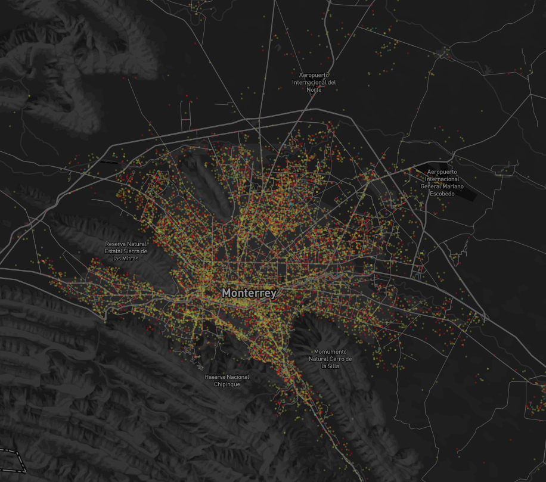

Bienestar subjetivo
Explorando el sentimiento en Twitter
En esta serie de mapas interactivos vamos a presentar una exploración del estado de ánimo de la comunidad Twittera de México a través de una serie de recorridos virtuales por las principales ciudades del país.
Recorrido Nacional

Este recorrido te va a llevar a explorar el estado de ánimo en las ciudades más grandes del pais.
Ciudad de México

La Zona Metropolitana del Valle de México es la ciudad más grande del país, ahí se concentra el gonbierno y es, además, un importante centro financiero.
Guadalajara
Guadalajara y el Valle de Atemajac son la segunda metrópoli más habitada del país. Su economía está basada en la industria y recientemente se ha especializado en Tecnologías de la Información
Monterrey
Monterrey es la tercera Metrópoli más habitada en el país, es el núcleo industrial más importante y la segunda ciudad en términos de Producto Interno Bruto.